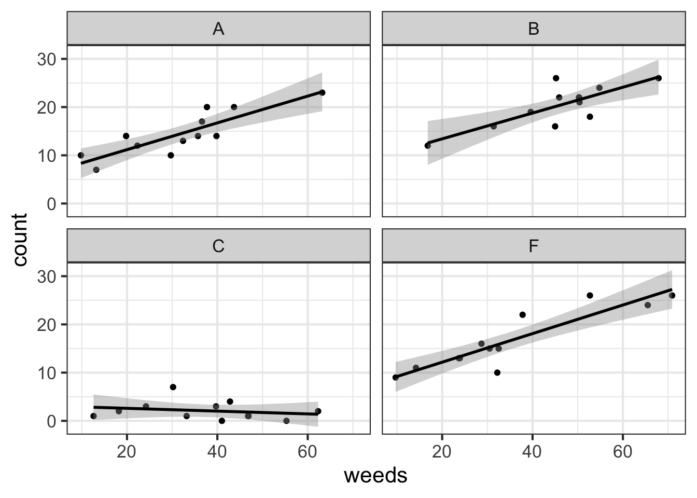
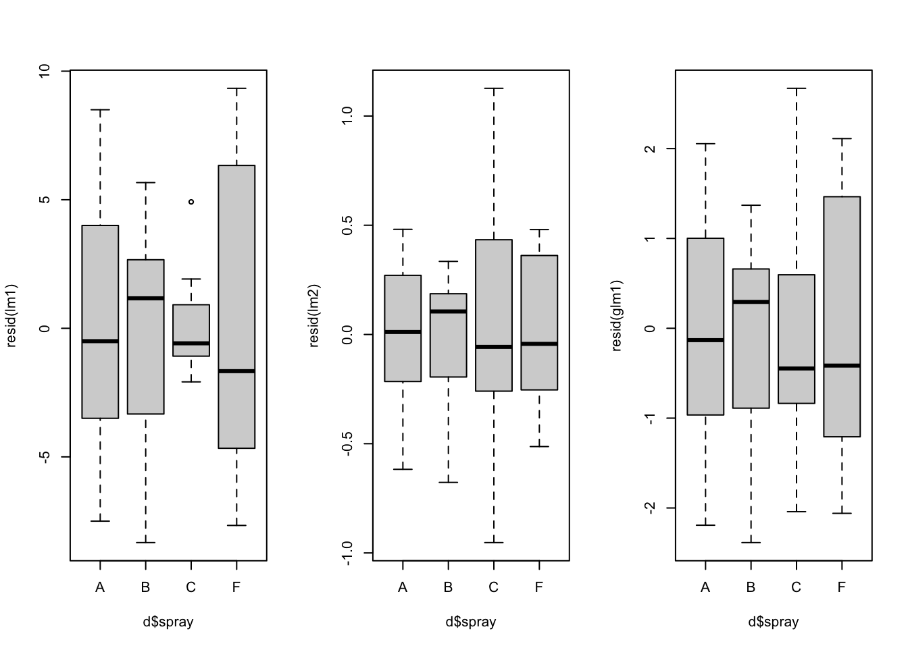
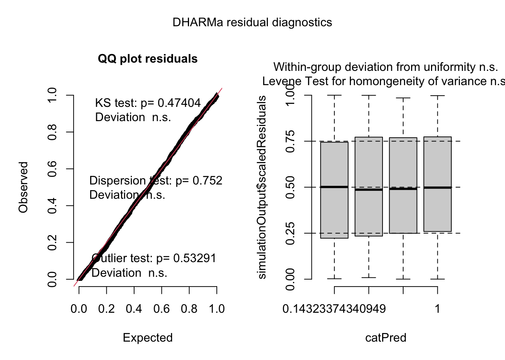
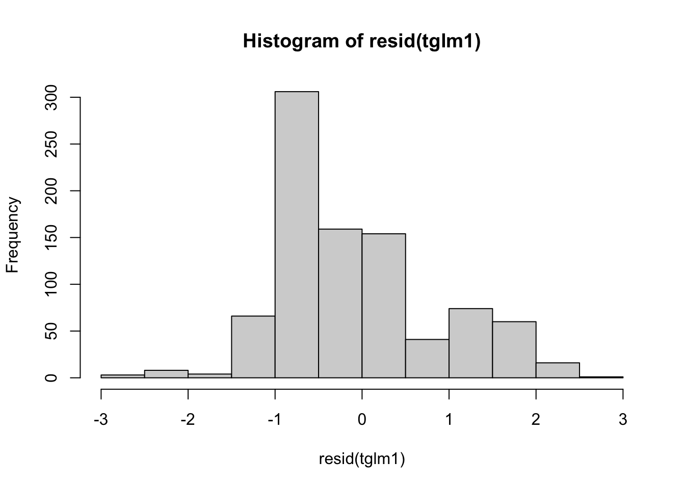
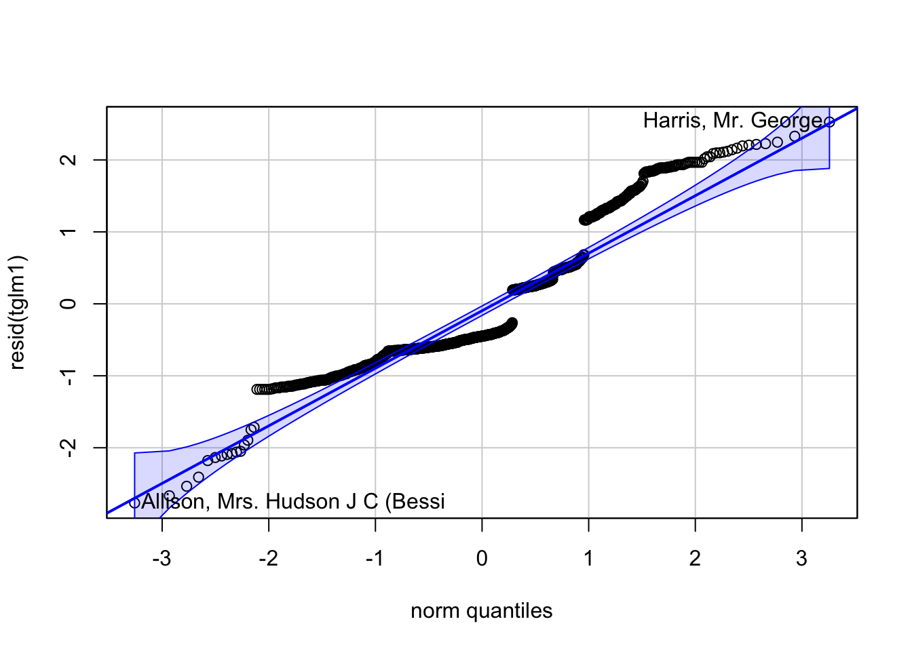

Chapter 3 Module 3
3.1 3A. Data Management
We will practice plotting data using the iris dataset.
data(iris) # load data (already exists in base R)head(iris) # print first 6 lines of dataset## Sepal.Length Sepal.Width Petal.Length Petal.Width Species
## 1 5.1 3.5 1.4 0.2 setosa
## 2 4.9 3.0 1.4 0.2 setosa
## 3 4.7 3.2 1.3 0.2 setosa
## 4 4.6 3.1 1.5 0.2 setosa
## 5 5.0 3.6 1.4 0.2 setosa
## 6 5.4 3.9 1.7 0.4 setosatail(iris) # print last 6 lines of dataset## Sepal.Length Sepal.Width Petal.Length Petal.Width Species
## 145 6.7 3.3 5.7 2.5 virginica
## 146 6.7 3.0 5.2 2.3 virginica
## 147 6.3 2.5 5.0 1.9 virginica
## 148 6.5 3.0 5.2 2.0 virginica
## 149 6.2 3.4 5.4 2.3 virginica
## 150 5.9 3.0 5.1 1.8 virginicastr(iris) # print 'structure' of dataset giving you info about each column## 'data.frame': 150 obs. of 5 variables:
## $ Sepal.Length: num 5.1 4.9 4.7 4.6 5 5.4 4.6 5 4.4 4.9 ...
## $ Sepal.Width : num 3.5 3 3.2 3.1 3.6 3.9 3.4 3.4 2.9 3.1 ...
## $ Petal.Length: num 1.4 1.4 1.3 1.5 1.4 1.7 1.4 1.5 1.4 1.5 ...
## $ Petal.Width : num 0.2 0.2 0.2 0.2 0.2 0.4 0.3 0.2 0.2 0.1 ...
## $ Species : Factor w/ 3 levels "setosa","versicolor",..: 1 1 1 1 1 1 1 1 1 1 ...3.1.1 Making and modifying variables
Here’s how we make a new column that is a unique number:
iris$Plant <- 1:length(iris$Species)Here’s how we make a new column that is total petal and sepal length:
iris$PetSep.Length <- iris$Petal.Length+iris$Sepal.LengthHere’s how to make a new column that log-transforms PetSep.Length:
iris$lnPS.Len <- log(iris$PetSep.Length)Here’s how to make a new column for ‘genus’. The only values you want is “Iris”:
iris$Genus <- 'Iris'Here’s how to combine two columns:
iris$GenSpp <- paste(iris$Genus, iris$Species, sep="_")Here’s how to change Species ‘versicolor’ to ‘versi’ in the GenSpp column:
iris$GenSpp <- gsub('versicolor', 'versi', iris$GenSpp ) ## looks for 'versicolor' and replaces it with 'versi' in the column iris$Speciessub() can be used for replacement but will only do 1 replacement and gsub() can also be used for replacement but with all matching instances.
You can use gsub() to add genus name to species column (alternative to making new column and then pasting together).
iris$GenSpp1 <- gsub('.*^', 'Iris_', iris$Species)3.1.2 Variables with the tidyverse
library(tidyverse) # load package tidyverse (install if needed)## ── Attaching packages ─────────────────────────────────────── tidyverse 1.3.1 ──## ✔ ggplot2 3.3.6 ✔ purrr 0.3.4
## ✔ tibble 3.1.8 ✔ dplyr 1.0.9
## ✔ tidyr 1.2.0 ✔ stringr 1.4.0
## ✔ readr 2.0.1 ✔ forcats 0.5.1## Warning: package 'ggplot2' was built under R version 4.1.2## Warning: package 'tibble' was built under R version 4.1.2## Warning: package 'tidyr' was built under R version 4.1.2## Warning: package 'dplyr' was built under R version 4.1.2## ── Conflicts ────────────────────────────────────────── tidyverse_conflicts() ──
## ✖ dplyr::filter() masks stats::filter()
## ✖ dplyr::lag() masks stats::lag()library(viridis)## Loading required package: viridisLitedata(iris) # reload iris to clear changes from above
iris1 <- as_tibble(iris) # load iris and convert to tibbleglimpse(iris1) ## similar to str(), just glimpses data## Rows: 150
## Columns: 5
## $ Sepal.Length <dbl> 5.1, 4.9, 4.7, 4.6, 5.0, 5.4, 4.6, 5.0, 4.4, 4.9, 5.4, 4.…
## $ Sepal.Width <dbl> 3.5, 3.0, 3.2, 3.1, 3.6, 3.9, 3.4, 3.4, 2.9, 3.1, 3.7, 3.…
## $ Petal.Length <dbl> 1.4, 1.4, 1.3, 1.5, 1.4, 1.7, 1.4, 1.5, 1.4, 1.5, 1.5, 1.…
## $ Petal.Width <dbl> 0.2, 0.2, 0.2, 0.2, 0.2, 0.4, 0.3, 0.2, 0.2, 0.1, 0.2, 0.…
## $ Species <fct> setosa, setosa, setosa, setosa, setosa, setosa, setosa, s…mutate() will allow you create and modify variables:
iris1 <- iris1 %>% mutate(Plant=1:length(Species),
PetSep.Length=Petal.Length+Sepal.Length,
lnPS.Len=log(PetSep.Length),
Genus='Iris',
GenSpp=gsub('.*^', 'Iris_', Species))
## note that I am overwriting iris1. Use with cautionsummarize() calculates means, sd, min, max, etc. on a dataset:
iris1 %>% summarize(mean(Petal.Length)) ## mean of Petal.Length in dplyr## # A tibble: 1 × 1
## `mean(Petal.Length)`
## <dbl>
## 1 3.76mean(iris1$Petal.Length) ## mean of Petal.Length in base R## [1] 3.758Here we summarize lnPS.Len by Species with both Tidyverse and base R:
means_PetLen1 <- iris1 %>% group_by(Species) %>%
summarize(Petal.Length=mean(Petal.Length)) ## tidy codemeans_PetLen2 <- aggregate(Petal.Length~Species, FUN="mean", data=iris1) ## base RHere we summarize multiple variables by species use summarize_all():
means1 <- iris1 %>%
select(Sepal.Length, Sepal.Width, Petal.Length,
Petal.Width,lnPS.Len, Species) %>%
group_by(Species) %>%
summarize_all(list(mean=mean,sd=sd,n=length))
means1## # A tibble: 3 × 16
## Species Sepal.Len…¹ Sepal…² Petal…³ Petal…⁴ lnPS.…⁵ Sepal…⁶ Sepal…⁷ Petal…⁸
## <fct> <dbl> <dbl> <dbl> <dbl> <dbl> <dbl> <dbl> <dbl>
## 1 setosa 5.01 3.43 1.46 0.246 1.86 0.352 0.379 0.174
## 2 versicolor 5.94 2.77 4.26 1.33 2.32 0.516 0.314 0.470
## 3 virginica 6.59 2.97 5.55 2.03 2.49 0.636 0.322 0.552
## # … with 7 more variables: Petal.Width_sd <dbl>, lnPS.Len_sd <dbl>,
## # Sepal.Length_n <int>, Sepal.Width_n <int>, Petal.Length_n <int>,
## # Petal.Width_n <int>, lnPS.Len_n <int>, and abbreviated variable names
## # ¹Sepal.Length_mean, ²Sepal.Width_mean, ³Petal.Length_mean,
## # ⁴Petal.Width_mean, ⁵lnPS.Len_mean, ⁶Sepal.Length_sd, ⁷Sepal.Width_sd,
## # ⁸Petal.Length_sd3.1.3 Reshape data for better usability
Here is how we reshape data from wide to long:
iris_long <- iris1 %>% group_by(Species) %>%
pivot_longer(cols=c(Sepal.Length, Sepal.Width, Petal.Length,
Petal.Width, lnPS.Len),
names_to = 'Trait',
values_to = 'value')
head(iris_long)## # A tibble: 6 × 7
## # Groups: Species [1]
## Species Plant PetSep.Length Genus GenSpp Trait value
## <fct> <int> <dbl> <chr> <chr> <chr> <dbl>
## 1 setosa 1 6.5 Iris Iris_setosa Sepal.Length 5.1
## 2 setosa 1 6.5 Iris Iris_setosa Sepal.Width 3.5
## 3 setosa 1 6.5 Iris Iris_setosa Petal.Length 1.4
## 4 setosa 1 6.5 Iris Iris_setosa Petal.Width 0.2
## 5 setosa 1 6.5 Iris Iris_setosa lnPS.Len 1.87
## 6 setosa 2 6.3 Iris Iris_setosa Sepal.Length 4.9We can calculate the mean, sd, and n for each Species by trait combination and then calculate the standard error (se):
means2 <- iris_long %>%
group_by(Species,Trait) %>%
summarize(mean=mean(value),
sd=sd(value),
n=length(value)) %>%
mutate(se=sd/sqrt(n)) %>%
filter(Trait!='lnPS.Len')## `summarise()` has grouped output by 'Species'. You can override using the
## `.groups` argument.head(means2)## # A tibble: 6 × 6
## # Groups: Species [2]
## Species Trait mean sd n se
## <fct> <chr> <dbl> <dbl> <int> <dbl>
## 1 setosa Petal.Length 1.46 0.174 50 0.0246
## 2 setosa Petal.Width 0.246 0.105 50 0.0149
## 3 setosa Sepal.Length 5.01 0.352 50 0.0498
## 4 setosa Sepal.Width 3.43 0.379 50 0.0536
## 5 versicolor Petal.Length 4.26 0.470 50 0.0665
## 6 versicolor Petal.Width 1.33 0.198 50 0.0280Note that the previous code could all be done in one piped command:
means2a <- iris1 %>%
group_by(Species) %>%
pivot_longer(cols=c(Sepal.Length, Sepal.Width, Petal.Length,
Petal.Width, lnPS.Len), names_to = 'Trait',
values_to = 'value') %>%
group_by(Species,Trait) %>%
summarize(mean=mean(value),
sd=sd(value),
n=length(value)) %>%
mutate(se=sd/sqrt(n)) %>%
filter(Trait!='lnPS.Len')## `summarise()` has grouped output by 'Species'. You can override using the
## `.groups` argument.means2a## # A tibble: 12 × 6
## # Groups: Species [3]
## Species Trait mean sd n se
## <fct> <chr> <dbl> <dbl> <int> <dbl>
## 1 setosa Petal.Length 1.46 0.174 50 0.0246
## 2 setosa Petal.Width 0.246 0.105 50 0.0149
## 3 setosa Sepal.Length 5.01 0.352 50 0.0498
## 4 setosa Sepal.Width 3.43 0.379 50 0.0536
## 5 versicolor Petal.Length 4.26 0.470 50 0.0665
## 6 versicolor Petal.Width 1.33 0.198 50 0.0280
## 7 versicolor Sepal.Length 5.94 0.516 50 0.0730
## 8 versicolor Sepal.Width 2.77 0.314 50 0.0444
## 9 virginica Petal.Length 5.55 0.552 50 0.0780
## 10 virginica Petal.Width 2.03 0.275 50 0.0388
## 11 virginica Sepal.Length 6.59 0.636 50 0.0899
## 12 virginica Sepal.Width 2.97 0.322 50 0.0456We can make a plot, below are two plots to start with. One is ineffective and one is more effective.
ggplot(data=means2, aes(x=Species, y=mean, fill=Trait)) +
geom_point(size=5, position=position_dodge(width=0.25), pch=22) +
labs(y="Floral part measurement (mm)") +
geom_errorbar(aes(ymin=(mean-sd), ymax=(mean+sd)), width=.2,
position=position_dodge(width=0.25), lwd=1.5) +
scale_fill_viridis(discrete = T,
labels=c("Petal Length","Petal Width",
"Sepal Length", "Sepal Width"),
option="magma") +
theme(panel.border=element_rect(color="black",size=2, fill=NA)) +
xlab("Species")
ggplot(data=iris_long %>%
filter(Trait!='lnPS.Len'), aes(x=Species,
y=value,
fill=Species)) +
geom_boxplot() +
facet_wrap(~Trait, scales = 'free_y') +
labs(y="Floral part measurement (mm)") +
scale_fill_viridis(discrete = T,
option = "plasma",
direction = -1, begin=.2) +
theme_bw()
We are still using the Iris data set as well as the tidyverse.
library(tidyverse)
library(viridis)
iris1 <- as_tibble(iris) # load iris and convert to tibbleHere we make plot of sepal.length by sepal.width in wide format:
ggplot(data=iris1, aes(x=Sepal.Width, y=Sepal.Length)) +
geom_point(color="#39568CFF") + ## color outside of aes() changes color of all points (ie. not mapped to a column)
facet_wrap(~Species) +
geom_smooth(method='lm',color="#39568CFF", fill="#39568CFF")+
theme_bw()## `geom_smooth()` using formula 'y ~ x'
We can reshape data for for comparing traits in different panels:
### reshape data from wide to long
iris_long <- iris1 %>% group_by(Species) %>%
pivot_longer(cols=c(Sepal.Length, Sepal.Width, Petal.Length, Petal.Width), names_to = 'Trait', values_to = 'value')
head(iris_long)## # A tibble: 6 × 3
## # Groups: Species [1]
## Species Trait value
## <fct> <chr> <dbl>
## 1 setosa Sepal.Length 5.1
## 2 setosa Sepal.Width 3.5
## 3 setosa Petal.Length 1.4
## 4 setosa Petal.Width 0.2
## 5 setosa Sepal.Length 4.9
## 6 setosa Sepal.Width 3Now we make a plot comparing species with traits on different panels:
ggplot(data=iris_long , aes(x=Species, y=value, fill=Species)) +
geom_boxplot() +
facet_wrap(~Trait, scales = 'free_y') +
labs(y="Floral part measurement (mm)") +
scale_fill_viridis(discrete = T,
option = "plasma",
direction = -1) +
theme_bw()
3.2 3B. Data Exploration
For data exploration we need to load the following libraries:
library(tidyverse)
library(agridat)## Warning: package 'agridat' was built under R version 4.1.2library(corrplot) ## corrplot 0.90 loadedlibrary(EnvStats) ##
## Attaching package: 'EnvStats'## The following objects are masked from 'package:stats':
##
## predict, predict.lm## The following object is masked from 'package:base':
##
## print.defaultWe will use the Iris dataset.
data(iris) # load data (already exists in base R)
iris[8,3] <- 7 # plant data point for demo
head(iris) # print first 6 lines of dataset## Sepal.Length Sepal.Width Petal.Length Petal.Width Species
## 1 5.1 3.5 1.4 0.2 setosa
## 2 4.9 3.0 1.4 0.2 setosa
## 3 4.7 3.2 1.3 0.2 setosa
## 4 4.6 3.1 1.5 0.2 setosa
## 5 5.0 3.6 1.4 0.2 setosa
## 6 5.4 3.9 1.7 0.4 setosatail(iris) # print last 6 lines of dataset## Sepal.Length Sepal.Width Petal.Length Petal.Width Species
## 145 6.7 3.3 5.7 2.5 virginica
## 146 6.7 3.0 5.2 2.3 virginica
## 147 6.3 2.5 5.0 1.9 virginica
## 148 6.5 3.0 5.2 2.0 virginica
## 149 6.2 3.4 5.4 2.3 virginica
## 150 5.9 3.0 5.1 1.8 virginicaHere we use str() to print the ‘structure’ of dataset giving you info about each column or we can use glimpse().
str(iris)## 'data.frame': 150 obs. of 5 variables:
## $ Sepal.Length: num 5.1 4.9 4.7 4.6 5 5.4 4.6 5 4.4 4.9 ...
## $ Sepal.Width : num 3.5 3 3.2 3.1 3.6 3.9 3.4 3.4 2.9 3.1 ...
## $ Petal.Length: num 1.4 1.4 1.3 1.5 1.4 1.7 1.4 7 1.4 1.5 ...
## $ Petal.Width : num 0.2 0.2 0.2 0.2 0.2 0.4 0.3 0.2 0.2 0.1 ...
## $ Species : Factor w/ 3 levels "setosa","versicolor",..: 1 1 1 1 1 1 1 1 1 1 ...glimpse(iris) # glimpse is similar to str() in tidyverse## Rows: 150
## Columns: 5
## $ Sepal.Length <dbl> 5.1, 4.9, 4.7, 4.6, 5.0, 5.4, 4.6, 5.0, 4.4, 4.9, 5.4, 4.…
## $ Sepal.Width <dbl> 3.5, 3.0, 3.2, 3.1, 3.6, 3.9, 3.4, 3.4, 2.9, 3.1, 3.7, 3.…
## $ Petal.Length <dbl> 1.4, 1.4, 1.3, 1.5, 1.4, 1.7, 1.4, 7.0, 1.4, 1.5, 1.5, 1.…
## $ Petal.Width <dbl> 0.2, 0.2, 0.2, 0.2, 0.2, 0.4, 0.3, 0.2, 0.2, 0.1, 0.2, 0.…
## $ Species <fct> setosa, setosa, setosa, setosa, setosa, setosa, setosa, s…3.2.1 Distributions & summary statistics
We can view histograms of petal lengths with this:
ggplot(iris, aes(x = Petal.Length)) +
geom_histogram(bins=12, color="white") +
theme_bw(base_size = 16) +
geom_vline(aes(xintercept = mean(Petal.Length)),
color = "blue",
size = 2) +
geom_vline(aes(xintercept= median(Petal.Length)),
color = "orange",
size = 2) The vertical lines above represent the mean and median values.
The vertical lines above represent the mean and median values.
We can also facet the histograms:
ggplot(iris, aes(x = Petal.Length)) +
geom_histogram(bins=12, color="white") +
facet_wrap(~Species, scales="free") +
theme_bw(base_size = 16)
We can use summary() to examine mean, median, and ranges:
summary(iris)## Sepal.Length Sepal.Width Petal.Length Petal.Width
## Min. :4.300 Min. :2.000 Min. :1.000 Min. :0.100
## 1st Qu.:5.100 1st Qu.:2.800 1st Qu.:1.600 1st Qu.:0.300
## Median :5.800 Median :3.000 Median :4.400 Median :1.300
## Mean :5.843 Mean :3.057 Mean :3.795 Mean :1.199
## 3rd Qu.:6.400 3rd Qu.:3.300 3rd Qu.:5.100 3rd Qu.:1.800
## Max. :7.900 Max. :4.400 Max. :7.000 Max. :2.500
## Species
## setosa :50
## versicolor:50
## virginica :50
##
##
## We can also get a table of means and medians with this tidyverse code:
iris %>%
pivot_longer(cols=c(1:4)) %>%
group_by(Species,name) %>%
summarize(mean=mean(value),median=median(value)) ## `summarise()` has grouped output by 'Species'. You can override using the
## `.groups` argument.## # A tibble: 12 × 4
## # Groups: Species [3]
## Species name mean median
## <fct> <chr> <dbl> <dbl>
## 1 setosa Petal.Length 1.57 1.5
## 2 setosa Petal.Width 0.246 0.2
## 3 setosa Sepal.Length 5.01 5
## 4 setosa Sepal.Width 3.43 3.4
## 5 versicolor Petal.Length 4.26 4.35
## 6 versicolor Petal.Width 1.33 1.3
## 7 versicolor Sepal.Length 5.94 5.9
## 8 versicolor Sepal.Width 2.77 2.8
## 9 virginica Petal.Length 5.55 5.55
## 10 virginica Petal.Width 2.03 2
## 11 virginica Sepal.Length 6.59 6.5
## 12 virginica Sepal.Width 2.97 33.2.2 Examining for outliers
Boxplots can be used to examine distribution and look for outliers:
ggplot(iris, aes(x=Species, y = Petal.Length)) +
geom_boxplot(fill="grey", width=.5) +
facet_wrap(~Species, scales="free") +
theme_bw(base_size = 16)
We can use a dixon test for outliers or other tests like the grubbs test or Rosner test (for multiple outliers):
library(outliers)## Warning: package 'outliers' was built under R version 4.1.2## grubbs test for outliers, highest then lowest. Other functions EnvStats::rosnerTest() can test for multiple outliers
grubbs.test(iris$Petal.Length) ## full dataset##
## Grubbs test for one outlier
##
## data: iris$Petal.Length
## G = 1.80564, U = 0.97797, p-value = 1
## alternative hypothesis: highest value 7 is an outliergrubbs.test(iris$Petal.Length[iris$Species=='setosa']) ## just species setosa##
## Grubbs test for one outlier
##
## data: iris$Petal.Length[iris$Species == "setosa"]
## G = 6.765525, U = 0.046807, p-value < 2.2e-16
## alternative hypothesis: highest value 7 is an outliergrubbs.test(iris$Petal.Length[iris$Species=='setosa'], opposite=T) ## test lower outlier for species setosa##
## Grubbs test for one outlier
##
## data: iris$Petal.Length[iris$Species == "setosa"]
## G = 0.71295, U = 0.98941, p-value = 1
## alternative hypothesis: lowest value 1 is an outlierHere we can remove outliers and remake boxplots. Filtering with “|” (OR) will select all observations where one condition is met but not the other.
iris1 <- iris %>% filter(Petal.Length<4 | !Species=='setosa')Plotting data:
ggplot(iris1, aes(x=Species, y = Petal.Length)) +
geom_boxplot(fill="grey", width=.5) +
facet_wrap(~Species, scales="free") +
theme_bw(base_size = 16)3.2.3 Explore relationships
We can first use the GGally package. The ggpairs() code provides us with scatter plots that plot variables against one another in a pairwise fashion. We also see the distribution of the data and the correlation coefficients between a pair of variables
library(GGally) ## install and load GGally package, if necessary## Registered S3 method overwritten by 'GGally':
## method from
## +.gg ggplot2ggpairs(iris1) ## Make a big panel plot for exploration!!!## `stat_bin()` using `bins = 30`. Pick better value with `binwidth`.
## `stat_bin()` using `bins = 30`. Pick better value with `binwidth`.
## `stat_bin()` using `bins = 30`. Pick better value with `binwidth`.
## `stat_bin()` using `bins = 30`. Pick better value with `binwidth`.
ggpairs(iris1, aes(color=Species, alpha=.75)) ## add color to seperate by species## `stat_bin()` using `bins = 30`. Pick better value with `binwidth`.
## `stat_bin()` using `bins = 30`. Pick better value with `binwidth`.
## `stat_bin()` using `bins = 30`. Pick better value with `binwidth`.
## `stat_bin()` using `bins = 30`. Pick better value with `binwidth`.
Alternative to ggpairs() is the cor() which can be better for quickly scanning complex datasets:
iris_cor <- cor(iris1 %>% select(-Species) %>% as.matrix()) ## first make correlation matrix
corrplot(iris_cor, method = "circle", type = "upper") ## plots strength of correlation as color-coded circles
3.3 3C. Model Selection
This section will include a quick overview on how to rank models based on AIC (Akaike Information Criterion). For this we need to load a few libraries:
library(bbmle)## Loading required package: stats4##
## Attaching package: 'bbmle'## The following object is masked from 'package:dplyr':
##
## slice3.3.1 Quick introduction
Model selection is the process in choosing a statistical model from a set of models given your data. Keep in mind that model selection can get messy and its implementation (including approaches and methods) is often debated. Model selection can be used in the context of exploration, inference, and prediction. For today’s section we focus an inferential approach with AIC.
3.3.2 Basic calculations
AIC was developed by Hirotogu Akaike and is a metric of relative model quality for a given set of data.
AIC is calculated using the following formula: \[ AIC = -2 * ln(model\ likelihood) + 2K \] K = number of parameters in the model
- Note: your data and your response variable have to be the same for AIC selection!
We can manually calculate AIC in R. Let’s do this with an example dataset:
data(mtcars)Let’s run a regression:
m1<-lm(data = mtcars, mpg ~ hp)Now that we ran the model let’s calculate the AIC by hand:
AIC = 2*logLik(m1) -2* 3
AIC[1]## [1] -181.2386- Note: K = 3 in this case because the model ‘m1’ has 3 degrees of freedom which can be checked when running the logLik() as seen here:
logLik(m1)## 'log Lik.' -87.61931 (df=3)Now let’s see what the regular AIC() gives us:
AIC(m1)## [1] 181.2386Looks like our calculations are the same!
So why use AIC? The lectures that follow along this section provides more detail but to quickly sum it up: 1. AIC is commonly used and accepted
Works well within a multiple competing hypothesis framework
A step forward in getting away from the p-value problem
3.3.3 AICc
Small sample sizes can bias AIC to select for models with too many parameters. To account for this AICc (Akaike Information Criterion Corrected for Small Sample Sizes) was developed and the equation for that goes as follows:
\[ AICc = AIC + \frac{2K^2 + 2K}{n - K -1} \] Where:
n = sample size
K = no. of parameters
3.3.4 Case study with AIC
Let’s load in some beetle size data:
df<-readRDS("size_data.rds")
library(viridis)This data includes global coverage of average beetle sizes (geo_avg). The cell number represents an individual hexagonal bin and within each bin the average beetle size (based on species lists), average temperature (MAT), temperature range (ATR), and net primary productivity (NPP_men) was calculated.
glimpse(df)## Rows: 309
## Columns: 6
## $ cell <chr> "1", "9", "10", "12", "13", "22", "23", "31", "32", "33", "41"…
## $ SR <int> 56, 7, 50, 15, 22, 19, 18, 3, 90, 13, 66, 91, 5, 134, 160, 88,…
## $ geo_avg <dbl> 1.0912129, 1.6880459, 1.2090465, 1.2123414, 1.0968534, 1.12845…
## $ MAT <dbl> 4.7616038, 1.1910487, 0.9827181, -0.6845881, -7.2203846, -3.78…
## $ NPP_men <dbl> 550.4055, 332.4632, 420.8561, 418.0304, 287.1639, 330.6352, 36…
## $ ATR <dbl> 26.58891, 23.71292, 29.55614, 34.34307, 46.19601, 38.76278, 48…If we wanted to plot the data to show the average beetle size across the planet it would like this:

It seems like there’s a weak but detectable trend of larger sized assemblages in northern/temperate areas. Although the continent of Australia really pops up as well.
What could be causing this pattern? Based on the literature there are several hypotheses we could test with models and AIC! They are as follows:
- Larger assemblages are just an artifact of undersampling. Sampling is more extensive in North America and Europe and therefore, size is simply a function of sampling. A proxy to measure sampling could be species richness.
sample<-lm(log(geo_avg) ~ SR, data = df)- Areas that experience harsher environments (larger ranges in temperature) likely have larger sized organisms that can weather such conditions.
seasonality<-lm(log(geo_avg) ~ ATR, data = df)- Areas that are colder have larger organisms due to thermoregulatory properties where larger organisms are able to trap and effectively conserve heat.
TEMP<-lm(log(geo_avg) ~ MAT, data = df)- Resource availability. Organisms can grow larger in resource rich areas.
NPP<-lm(log(geo_avg) ~ NPP_men, data = df)- Finally, there could be no statistical pattern and therefore there is no effect on size i.e. a statistical null.
nullm<-lm(log(geo_avg) ~ 1, data = df)Now let’s calculate the AIC scores of the models:
bbmle::AICtab(sample, seasonality, TEMP, NPP, nullm, weights = T,
delta = T, base = T)## AIC dAIC df weight
## seasonality -124.1 0.0 3 1
## TEMP -96.1 28.0 3 <0.001
## NPP -89.4 34.7 3 <0.001
## sample -89.3 34.8 3 <0.001
## nullm -73.2 50.9 2 <0.001The seasonality hypothesis seems like the best or most likely model while the null and the sampling effect models show the least support. We also see that the next closest model is the temperature model but is beyond a \(\Delta\) AIC difference of 2. All in all we show strong support for the seasonality hypothesis.
We also see another metric labelled as “weight”. The AIC weight represents the probability that the model is best from the set of competing models and it’s another metric that can be used to assess models other than raw AIC scores.
We can make a nice plot with this data along a seasonality axis:
ggplot(data = df) +
geom_point(aes(x = ATR, y = geo_avg, fill = log(SR)),
pch = 21,
size = 5,
color = 'grey',
alpha = 0.8) +
geom_rug(aes(x = ATR, y = geo_avg)) +
scale_fill_viridis_c() +
scale_y_log10() +
labs(x = "Annual Temp. Range",
y = "Size", fill = "Log(SR)") +
geom_smooth(aes(x = ATR, y = geo_avg), method = "lm",
color = "black") +
ylim(c(0, 2)) +
theme_minimal() +
theme(axis.title = element_text(size = 22, face = 'bold'),
legend.title = element_text(size = 15, face = 'bold'),
legend.position = "top") ## Scale for 'y' is already present. Adding another scale for 'y', which will
## replace the existing scale.## `geom_smooth()` using formula 'y ~ x'